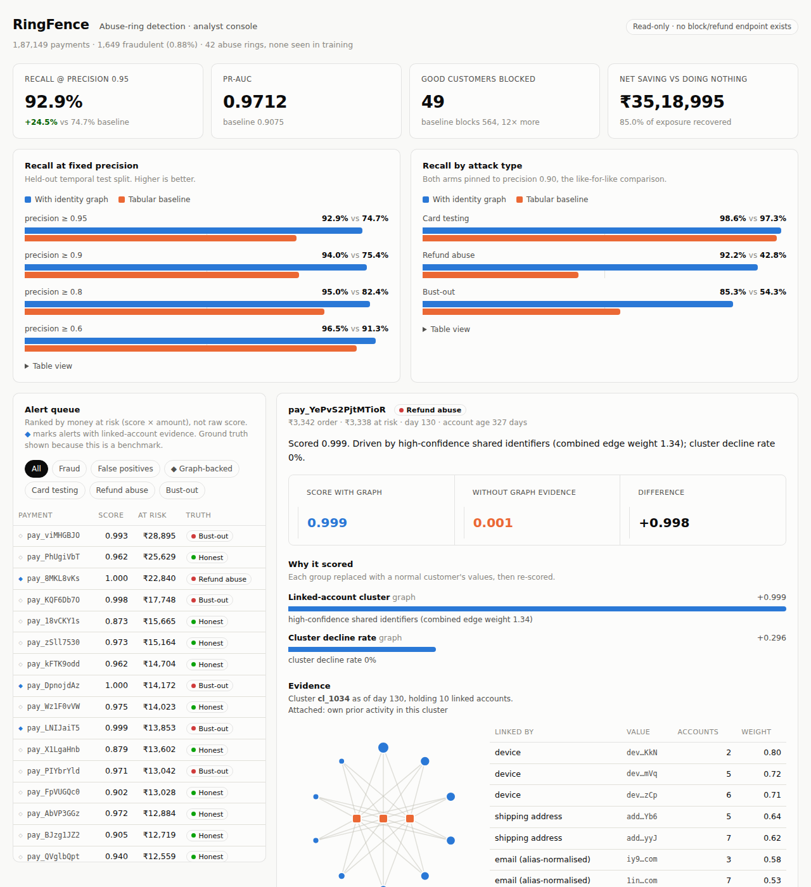
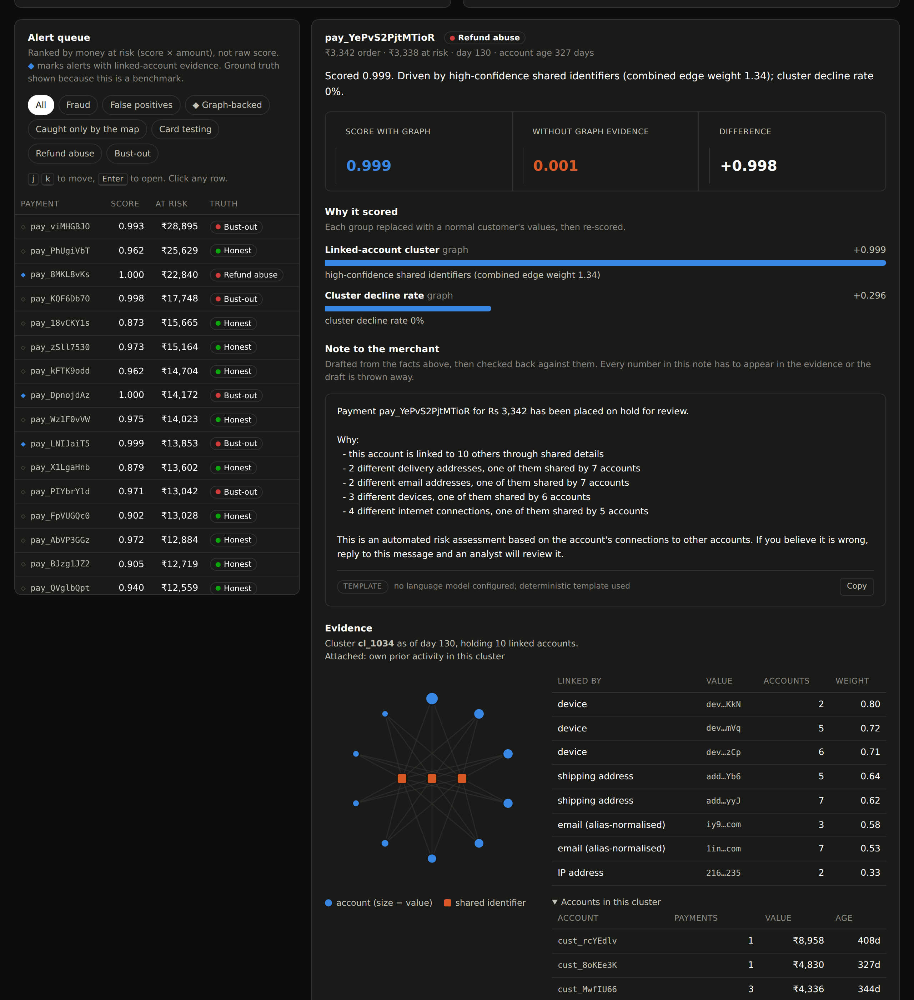

Fraud rings hide in plain sight. Every payment looks fine on its own. RingFence finds them by looking at what the accounts share.
Here is the same payment, judged on its own and judged against everything around it.
Three kinds of loss look unrelated on a dashboard. Underneath they are the same thing: the evidence sits between accounts, never inside one.
| Type of fraud | What one payment looks like | What the group looks like |
|---|---|---|
| Card testing | A few small failed payments | One device trying 200 cards in 40 minutes |
| Refund abuse | A normal order, later refunded | 60 "new customers" at one address |
| Bust-out | One large successful payment | 30 fresh accounts, one drop address, chargebacks six weeks later |
We count the full cost: fraud that gets through, chargeback fees, the profit lost when a real customer is wrongly blocked, and the analyst's time. The system is tuned to minimise that total, not to win a leaderboard metric.
Measured on 187,149 payments the model had never seen, from a later time period than it was trained on. All 42 fraud rings in that test were new to it.
We built the same system twice. Identical code, identical data, one difference: the second one can see the map of shared identifiers. Everything below is that comparison.
How to read this: each row asks "if we only accept alerts we're 95% sure about, how much fraud do we still catch?" Higher is better.
Where the gain comes from. Refund abuse goes from 43% caught to 92%. Bust-out from 54% to 85%. Card testing barely moves, 97% to 99%, because simple speed counters already catch it. We say so rather than hiding it.
This is the part most projects leave out.
more fraud caught, at the same accuracy. Holds up under every check we could think of.
The difference was smaller than the random variation between training runs. In other words: nothing.
We nearly reported a win that wasn't there. One run showed the map ahead by 2.9%. Encouraging. Then we retrained it five times with different random starts and found the run-to-run wobble was three times bigger than the "improvement". It was noise. There is now a command in the repo that makes this check mandatory before any result can be claimed.
Then we tested our own excuse. Our explanation was that the public dataset has lone fraudsters, not organised rings, so there is no group structure to find. That prediction is testable: the map should help more where accounts are heavily linked. We checked. No pattern. The only statistically clear result was the map doing slightly worse on small clusters. So we withdrew the explanation.
The method works on data we built. It does nothing on data we didn't. We looked hard for the reason and did not find it. That is where the project honestly stands.
Each one came from something breaking first.
Families share one credit card. A whole apartment block shares a delivery address. Four hundred people on the same mobile network share an IP. If you flag every shared detail you drown in false alarms.
So each shared detail is weighted by how rare it is. A card used by three accounts is strong evidence. An IP used by four hundred is thrown away entirely, because it tells you nothing and it links everyone to everyone.
Twenty accounts at one address could be an apartment block or a fraud ring. On a map they look identical.
The giveaway is timing. A building's residents signed up over several years. A fraud ring signed up the same week. Before we added this, the system was actively worse at catching the most expensive fraud type.
A fraudster's brand new account has no history, so searching for that account returns nothing, exactly when it matters most.
Instead we look up what the payment touches: the delivery address it ships to, which we may already know is part of a ring. This single change took the system from slightly worse than the baseline to substantially better. It is the difference between the idea working and not.
Each of these is written up properly in the repo, with the reasoning that caught it.
Not a great model. A broken test. Every fraud account we generated was brand new and almost every honest one was old, so "account age" gave the answer away.
We rebuilt the map every 5 days, but card-testing rings live and die in 2. The map never saw them, so "has map data" came to mean "probably honest".
One parameter set slightly too high made the algorithm break tightly connected groups into individuals, which is precisely what a ring is.
Every payment from a gmail address inherited a "cluster" of 100,000 strangers. Fixing it made the results better, not worse.
Retraining five times showed the random wobble was three times larger than the gain. It nearly went into the results.
We made a prediction, tested it, found no support, and withdrew the explanation instead of keeping a comfortable story.
"The computer said so" is not something you can tell a customer whose payment you just declined.
Each alert comes with a plain-English reason and the evidence behind it: which accounts are linked, by what, and how strongly. Account details are masked so the evidence can be pasted into a support ticket.


Every case ends with the note that would go to the merchant, written from the evidence on screen and then checked back against it. If a number in the note is not in the evidence, the draft is thrown away and a plain template is sent instead. The panel says which one you are reading.
There is a filter called "Caught only by the map": the 50 alerts RingFence raises that a conventional system would have let through entirely. 48 of the 50 are genuine fraud. That is the whole argument in one click.
The queue is sorted by money at risk, not by score. Sorting by score alone filled the entire first page with ₹5 card tests: technically correct, practically useless. It also shows the cases it got wrong, because a system that only explains its successes cannot be audited.
No neural network. One AI model, in one place, on a leash. A graph neural network was considered and rejected: it would memorise 4,500 examples and quietly cheat by looking at future connections. Classical algorithms build the map and a well-understood model makes the call. That is a deliberate choice, not a shortcut.
The single place an AI writing model earns its place is the last one. Once a payment is held, somebody has to write to the merchant, and that is a writing job. So RingFence drafts that note with a model and then refuses to trust it: every number in the draft is checked back against the evidence, the payment reference has to survive intact, and accusing language is thrown out. A draft that fails any of those is discarded and a plain template is sent instead. The template is the floor. The model can only make it read better, never make it say more.
It cannot attack anything. The service only reads. There is no way to block a payment, issue a refund or change an account through it. The fake data contains no usable card numbers. That is enforced by how it is built, not by a promise.